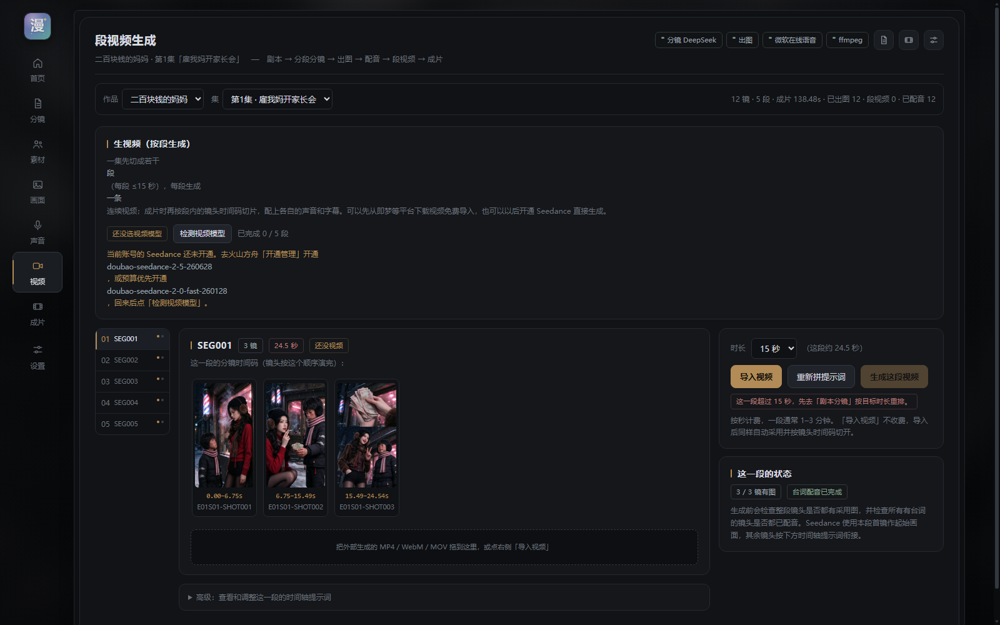
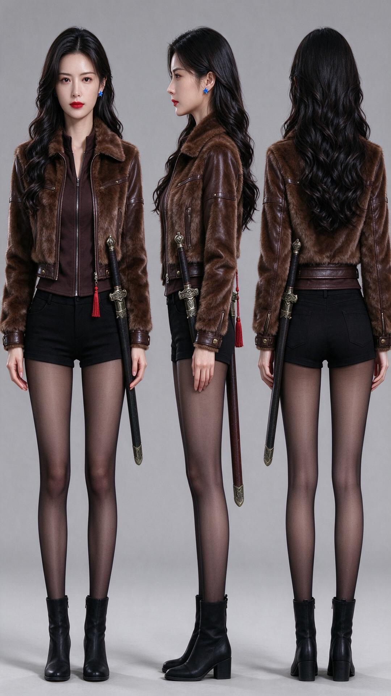
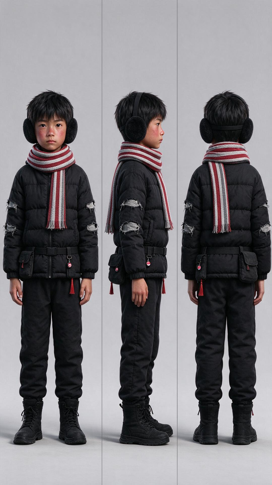

AI PRODUCT CASE STUDY · 2026
把分散的 AI 漫剧生产
整理成一条可追溯的流程
面向个人创作者的本地工作台：从剧本拆解、15 秒段落分镜、角色与道具一致性，到配音、段视频与剪辑导出，在一个软件内按正确顺序完成。
产品设计交互设计AI 工作流开发实现


7
阶段单线生产
01 · THE PROBLEM
问题不是“不能生成”，
而是整条生产流程无法被管理
个人创作者真正耗费时间的地方，是工具切换、素材对不上、顺序反复和状态丢失。
工具断裂
剧本、分镜、图片、配音、视频和剪辑分散在多个软件，靠手工命名传递。
角色漂移
人物在不同镜头中服装、脸和道具不一致，镜头越多，返工成本越高。
生成顺序反了
先生成视频再配音会导致时长和节奏不匹配；先生图、再配音、再生视频更可控。
进度无法恢复
刷新或重启后任务中断，创作者不知道哪些镜头已有图片、配音和参考素材。
PRODUCT INSIGHT 用户需要的不是更多模型入口，而是一个始终知道“现在缺什么、下一步做什么”的生产工作台。
02 · THE PRODUCT
一条顺序明确的生产线
首页不展示模型列表，而是展示七个生产阶段、当前进度和下一步操作。
剧本
整集内容输入
拆段
目标时长 → 15 秒单元
分镜
时间码、动作、状态
出图
角色、服装、道具引用
配音
先锁定声音和节奏
视频
采用图 + 动作提示
成片
剪辑、字幕、导出
单线总控当前作品、阶段状态、缺项与下一步集中在同一页。
从正确依赖开始先生图后配音，再生成段视频，剪辑只处理确认后的结果。
外部素材可进入豆包、即梦的图片和视频可导入统一采用与剪辑流程。
03 · KEY DECISIONS
产品价值藏在取舍里
DECISION 01
先拆 15 秒段，再拆镜头
75 秒不是 75 个独立视频，而是 5 个可生成、可审核、可返工的生产单元。每段内部再按精确时间码拆镜头。
- 控制模型调用成本和返工范围
- 用前镜 End State 接后镜 Start State
- 只重做出现问题的那一段

DECISION 02
角色一致性是一条资产引用链
角色、服装、道具和场景先入库，再由每个镜头显式引用；生成结果可以追溯到具体资产版本，而不只依赖一句提示词。
- Hard Lock 固定脸型、服装与指定道具
- 逐镜记录参考图和素材血缘
- 未登记武器时禁止模型自行添加佩剑

DECISION 03
模型可以换，生产秩序不能丢
工作台不强制绑定单一模型。没有视频模型权限时，仍然可以导入外部段视频；产品把不同模型产物纳入同一套采用、质检和剪辑流程。
- 图片支持单张、ZIP 和外部生成结果导入
- 段视频支持 MP4、WebM、MOV、M4V
- 模型权限和费用边界被明确展示

04 · CONSISTENCY SYSTEM
每张结果图，都能解释它从哪里来
素材库不是文件夹，而是生产过程中的引用源。角色、服装、道具与镜头之间形成可检查的关系。


01角色资产角色 ID / 三视图 / 服装版本
02逐镜引用指定角色、服装与道具
03提示词编译Start / Action / End + Hard Lock
04镜头结果采用版本与生成来源可回溯
05 · GENERATION PIPELINE
先锁定视觉和声音，再生成视频


剧本分镜采用图配音段视频剪辑
配音不是成片前的补项，而是视频生成的上游依赖。声音先确定，视频长度、口型和情绪才有可靠参考。
06 · VISUAL EVIDENCE
镜头图和配音已经形成可继续生产的素材
样例共 12 镜，全部完成采用图和角色配音。这里展示图片结果与生产状态，不把现阶段拼接成片当作视频生成能力展示。
图片仅用于项目作品评审，请勿转载或用于二次创作。
08 · SCOPE & REFLECTION
明确不做什么，
比把所有 AI 能力都塞进来更重要
CURRENT SCOPE
当前边界
- 单人、本地运行，无登录和云数据库
- 外部图片和段视频可导入，不被单一模型锁死
- 参考音色与可合成音色明确区分
- 剪辑辅助保留人工确认，不伪装成全自动
NEXT
下一步验证
- 用真实创作者测试拆段和返工的认知负担
- 在可控成本下验证更多视频模型与配额
- 接入真正可合成的声音克隆能力
- 衡量完成时间、返工率和放弃点
这个项目让我练习的不是“调用多少模型”，而是如何把生成式 AI 的不确定性，收进一条可操作、可验证、可解释的产品流程。